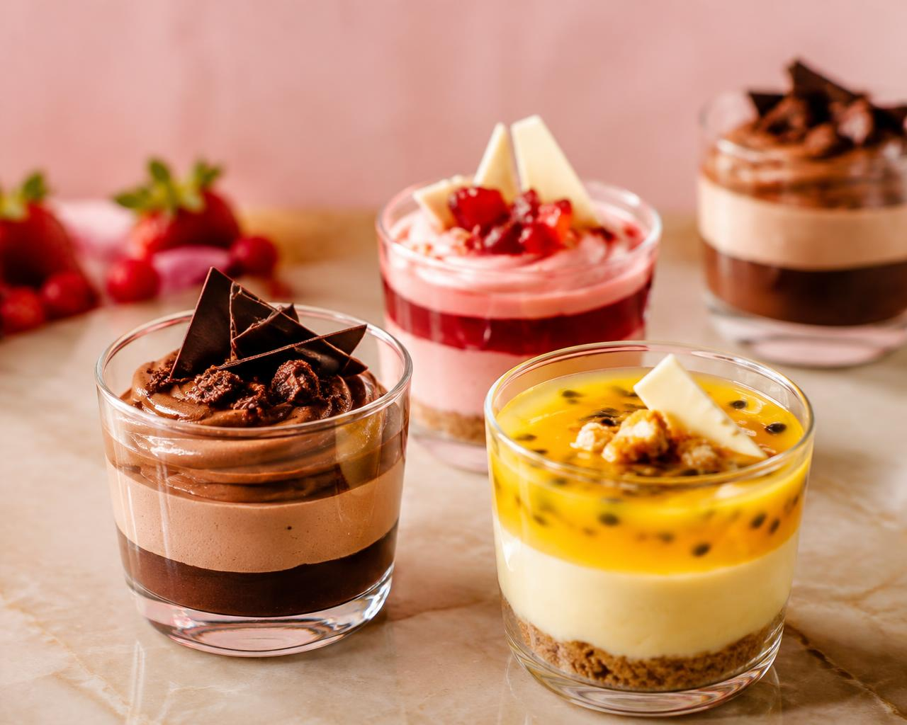

Mais de 50 Receitas de Sobremesas
Uma seleção de mais de 50 receitas para diversificar o cardápio, experimentar sabores e oferecer diferentes opções aos clientes.
Aprenda a preparar e vender potes de mousse com um treinamento prático e mais de 50 receitas para você começar a construir seu próprio negócio de sobremesas.
Comece com o que você tem e dê o primeiro passo para empreender.

o que você vai receber
Uma seleção de mais de 50 receitas para diversificar o cardápio, experimentar sabores e oferecer diferentes opções aos clientes.

Aprenda a preparar mousses cremosos e sobremesas em potes individuais, com apresentações atrativas para a venda.

Explore combinações de sabores e possibilidades para criar um cardápio que desperte o interesse dos clientes.

Acesse o conteúdo em formato digital para consultar orientações e receitas durante sua jornada empreendedora.
por que escolher o protocolo?
Tenha acesso a receitas e orientações para dar os primeiros passos, mesmo que você nunca tenha vendido sobremesas.
Com mais de 50 receitas, você poderá explorar diferentes sabores e criar mais opções para seus clientes.
Prepare suas sobremesas em casa e organize sua rotina de produção conforme sua disponibilidade.
Teste combinações e desenvolva opções que façam sentido para o público da sua região.
Em vez de pesquisar receitas aleatórias, tenha um material organizado para consultar enquanto estrutura seu negócio.
"Você não precisa começar com uma grande estrutura. Comece aprendendo, coloque em prática e evolua um passo de cada vez."
bônus exclusivos
Organize custos de ingredientes, embalagens e demais despesas, facilitando o cálculo do preço de venda e a análise da margem de lucro.
Ideias práticas para apresentar suas sobremesas nas redes sociais, divulgar seu cardápio e mostrar seus produtos.
Orientações para selecionar sabores, organizar as opções e apresentar um cardápio claro e atrativo.
oferta especial
Tenha acesso ao Protocolo Renda Extra de Colher, às mais de 50 receitas e aos três bônus complementares para dar seus primeiros passos no mercado de sobremesas.
Tempo para concluir sua decisão
Investimento
(INSERIR PREÇO)
Compra segura · 7 dias de garantia
conheça as receitas

Imagens ilustrativas do universo das sobremesas de colher.
relatos
Aprender receitas diferentes me ajudou a ampliar as opções do meu cardápio.
Nome da aluna
Espaço para depoimento real
Consegui organizar melhor a preparação das minhas sobremesas.
Nome da aluna
Espaço para depoimento real
Me senti mais confiante para começar a divulgar meus produtos.
Nome da aluna
Espaço para depoimento real
Estes cards são exemplos ilustrativos e serão substituídos por depoimentos reais e autorizados.
Queremos que você tenha tranquilidade para conhecer o Protocolo Renda Extra de Colher. Por isso, sua compra conta com uma garantia incondicional de 7 dias, conforme as condições da oferta. Se decidir que o treinamento não é para você dentro desse prazo, poderá solicitar o reembolso integral.
perguntas frequentes
Não. O treinamento foi pensado para mulheres que desejam dar os primeiros passos na preparação e venda de sobremesas, inclusive quem está começando do zero.